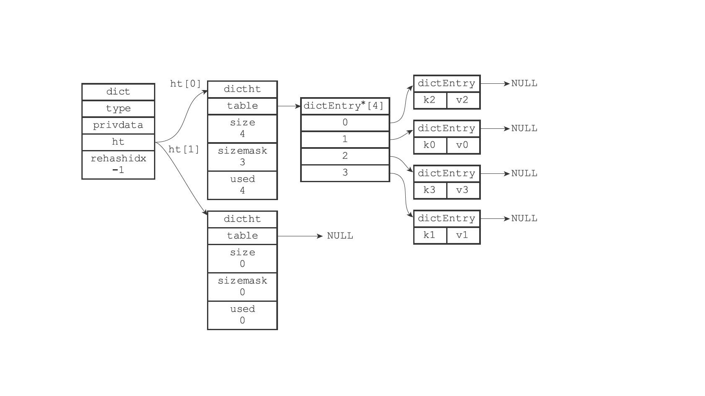
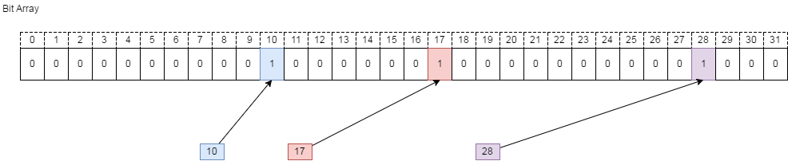

redis总结
redis的特性
- 单线程，避免线程切换和锁操作
- 高性能，单机并发量达到万级
- 支持集群模式
redis单线程高性能的原因
- 纯内存访问，内存的响应时间是100ns，redis并发达到每秒w级
- 非阻塞io，redis使用epoll作为多路复用的实现，redis基于epoll实现了自己的事件处理模型。将epoll中的连接、读写、关闭都转换为事件，不在网络I/O上浪费过多的时间。
- 单线程避免了锁竞争和线程切换，以及线程创建。
- 单线程有利于高性能数据结构的实现。
redis单线程的问题
对于每个命令都是有执行时间的，如果某个命令执行时间过长，会造成其它命令阻塞，对高性能来说是致命的。
redis应用场景
- 消息队列系统，利用redis的发布订阅和阻塞功能
- 分布式锁，利用setnx或者lua脚本实现原子操作
- 缓存，分布式缓存，提高系统的响应速度
- 排行榜系统，使用redis的列表和有序集合
- 计数器应用
redis不适合的场景
- 从数据规模，过大的数据不适合放在redis中
- 从数据类型，分为冷数据和热数据（频繁操作的），reids存冷数据有些浪费资源
redis的基本数据类型
1. string类型
数据结构：自定义SDS，不是c语言字符串
struct sdshdr {
//记录buf数组中已使⽤字节的数量
//等于SDS所保存字符串的⻓度
int len;
//记录buf
数组中未使⽤字节的数量
int free;
//字节数组， ⽤于保存字符串
char buf[];
}
和c字符串相比优缺点如下： | c字符串 | SDS字符串 | | ---------------------------- | ---------------------------- | | 获取长度复杂度O(N) | 获取长度复杂度O(N) | | API不安全，缓冲区可能溢出 | API安全，缓冲区不会溢出 | | 修改字符串N次内存分配N次 | 内存分配次数最多为N次 | | 只能保持文本书籍 | 可以保存文本和二进制数据 | | 可以使用所有<string.h>库函数 | 可以使用部分<string.h>库函数 |
SDS内存分配
如果对SDS进⾏修改之后， SDS的长度（也即是len属性的值） 将小于1MB， 那么程序分配和len属性同样⼤小的未使用空间， 这时SDS len属性的值将和free属性的值相同，大于1M直接分配1M的未使用空间。 在扩展SDS空间之前， SDS API会先检查未使⽤空间是否⾜够， 如果⾜够的话， API就会直接使⽤未使⽤空间， ⽽⽆须执⾏内存重分配。 用途：1.字符串存储，数字，二进制数据也可以，大小（512m以内）
惰性空间释放⽤于优化SDS的字符串缩短操作： 当SDS的API需要缩短SDS保存的字符串时， 程序并不⽴即使⽤内存重分配来回收缩短后多出来的字节， ⽽是使⽤free属性将这些字节的数量 记录起来， 并等待将来使⽤
2. 字典（hash表）
数据结构：hash表，hash节点，字典（Redis使⽤MurmurHash2算法来计算键的哈希值。）
typedef struct dict {
//类型特定函数
dictType *type;
//私有数据
void *privdata;
//哈希表
dictht ht[2];
// rehash索引
//当rehash不在进⾏时， 值为-1
in trehashidx;
} dict;
typedef struct dictht {
//哈希表数组
dictEntry **table;
//哈希表⼤⼩
unsigned long size;
//哈希表⼤⼩掩码， ⽤于计算索引值
//总是等于size-1
unsigned long sizemask;
//该哈希表已有节点的数量
unsigned long used;
} dictht;
typedef struct dictEntry {
//键
void *key;
//值
union{
void *val;
uint64_tu64;
int64_ts64;
} v;
//指向下个哈希表节点， 形成链表
struct dictEntry *next;
} dictEntry;
redis如何解决hash表问题
1、redis如何计算hashcode
Redis使⽤MurmurHash2算法来计算键的哈希值。
2、如何解决hash冲突
Redis的哈希表使⽤链地址法（separate chaining） 来解决键冲突， 每个哈希表节点都有⼀个next指针，多个哈希表节点可以⽤next指针构成⼀个单向链表，被分配到同⼀个索引上的多个节
点可以⽤这个单向链表连接起来，这就解决了键冲突的问题。
3、rehash 
- 1） 为字典的ht[1]哈希表分配空间， 这个哈希表的空间⼤⼩取决于要执⾏的操作， 以及ht[0]当前包含的键值对数量（也即是ht[0].used属性的值） ：
- ·如果执⾏的是扩展操作， 那么ht[1]的⼤小为第⼀个⼤于等于ht[0].used*2的2 n（2的n次⽅幂） ；
- ·如果执⾏的是收缩操作， 那么ht[1]的⼤小为第⼀个⼤于等于ht[0].used的2 n。
- 2） 将保存在ht[0]中的所有键值对rehash到ht[1]上⾯：rehash指的是重新计算键的哈希值和索引值， 然后将键值对放置到ht[1]哈希表的指定位置上。
- 3） 当ht[0]包含的所有键值对都迁移到了ht[1]之后（ht[0]变为空表） ， 释放ht[0]， 将ht[1]设置为ht[0]， 并在ht[1]新创建⼀个空⽩哈希表， 为下⼀次rehash做准备。 4、渐进式rehash 因为在进⾏渐进式rehash的过程中，字典会同时使⽤ht[0]和ht[1]两个哈希表，所以在渐进式rehash进⾏期间，字典的删除（delete）、查找（find）、更新（update）等操作会在两个哈希表上进⾏。例如，要在字典⾥⾯查找⼀个键的话，程序会先在ht[0]⾥⾯进⾏查找， 如果没找到的话，就会继续到ht[1]⾥⾯进⾏查找，诸如此类。 另外，在渐进式rehash执⾏期间，新添加到字典的键值对⼀律会被保存到ht[1]⾥⾯， ⽽ht[0]则不再进⾏任何添加操作， 这⼀措施保证了ht[0]包含的键值对数量会只减不增， 并随着rehash操 作的执⾏⽽最终变成空表。
3. list
数据结构：自定义的双向链表，listNode，list
typedef struct listNode {
//前置节点
struct listNode * prev;
//后置节点
struct listNode * next;
//节点的值
void * value;
}listNode;
typedef struct list {
//表头节点
listNode * head;
//表尾节点
listNode * tail;
//链表所包含的节点数量
unsigned long len;
//节点值复制函数
void *(*dup)(void *ptr);
//节点值释放函数
void (*free)(void *ptr);
//节点值对⽐函数
int (*match)(void *ptr,void *key);} list
- ·链表被⼴泛用于实现Redis的各种功能， 比如列表键、 发布与订阅、 慢查询、 监视器等。
- ·每个链表节点由⼀个listNode结构来表示， 每个节点都有⼀个指向前置节点和后置节点的指针， 所以Redis的链表实现是双端链表。
- ·每个链表使用⼀个list结构来表示， 这个结构带有表头节点指针、 表尾节点指针， 以及链表长度等信息。
- ·因为链表表头节点的前置节点和表尾节点的后置节点都指向NULL， 所以Redis的链表实现是⽆环链表。
- ·通过为链表设置不同的类型特定函数， Redis的链表可以用于保存各种不同类型的值。
4. set
数据结构：set
特性：元素是无序的，元素不可以重复
用途：
5. sortedset
数据结构：ziplist，skiplist，intset
skipList
特性：元素是有序的，元素不可以重复
typedef struct zskiplist {
//表头节点和表尾节点
struct zskiplistNode *header, *tail;
//表中节点的数量
unsigned long length;
//表中层数最⼤的节点的层数
int level;
} zskiplist;
typedef struct zskiplistNode {
//层
struct zskiplistLevel {
//前进指针
struct zskiplistNode *forward;
//跨度
unsigned int span;
} level[];
//后退指针
struct zskiplistNode *backward;
//分值
double score;
//成员对象
robj *obj;
} zskiplistNode;
intset
整数集合（intset） 是集合键的底层实现之⼀， 当⼀个集合只包含整数值元素， 并且这个集合的元素数量不多时， Redis就会使⽤整数集合作为集合键的底层实现
typedef struct intset {
//编码⽅式
uint32_t encoding;
//集合包含的元素数量
uint32_t length;
//保存元素的数组
int8_t contents[];
} intset;
虽然intset结构将contents属性声明为int8_t类型的数组， 但实际上contents数组并不保存任何int8_t类型的值， contents数组的真正类型取决于encoding属性的值
- 如果encoding属性的值为INTSET_ENC_INT16， 那么contents就是⼀个int16_t类型的数组，数组里的每个项都是⼀个int16_t类型的整数值（最小值为-32768， 最⼤值为32767）
- 如果encoding属性的值为INTSET_ENC_INT32， 那么contents就是⼀个int32_t类型的数组，数组里的每个项都是⼀个int32_t类型的整数值（最小值为-2147483648， 最⼤值为2147483647） 。
- 如果encoding属性的值为INTSET_ENC_INT64， 那么contents就是⼀个int64_t类型的数组，数组里的每个项都是⼀个int64_t类型的整数值（最小值为-9223372036854775808， 最⼤值为 9223372036854775807）
intset类型升级操作 1） 根据新元素的类型，扩展整数集合底层数组的空间⼤⼩，并为新元素分配空间。 2） 将底层数组现有的所有元素都转换成与新元素相同的类型， 并将类型转换后的元素放置到正确的位上， ⽽且在放置元素的过程中， 需要继续维持底层数组的有序性质不变。 3） 将新元素添加到底层数组⾥⾯。
intset优缺点
- 整数集合的升级策略有两个好处，⼀个是提升整数集合的灵活性， 另⼀个是尽可能地节约内存
- 整数集合不⽀持降级操作，⼀旦对数组进⾏了升级，编码就会⼀直保持升级后的状态。
ziplist
压缩列表（ziplist） 是列表键和哈希键的底层实现之⼀。 当⼀个列表键只包含少量列表项，并且每个列表项要么就是⼩整数值， 要么就是长度⽐较短的字符串， 那么Redis就会使⽤压缩列表来做列表键的底层实现。
压缩列表是Redis为了节约内存⽽开发的， 是由⼀系列特殊编码的连续内存块组成的顺序型（sequential） 数据结构。 ⼀个压缩列表可以包含任意多个节点（entry） ， 每个节点可以保存⼀个字节数组或者⼀个整数值。
6、HyperLogLog
Redis HyperLogLog 是用来做基数统计的算法，HyperLogLog 的优点是，在输入元素的数量或者体积非常非常大时，计算基数所需的空间总是固定 的、并且是很小的。
在 Redis 里面，每个 HyperLogLog 键只需要花费 12 KB 内存，就可以计算接近 2^64 个不同元素的基 数。这和计算基数时，元素越多耗费内存就越多的集合形成鲜明对比
- 原理：通过N次伯努利过程来计算统计的数，有一定误差。
- 复杂度：
7、BitMap
- 原理：把key映射到的某一个存储位，因为是byte类型，只能存储0、1，表示状态。
- 数字类型：可以直接存储到具体位置，比如10，存到下标10的位置
- 字符串：进行hash算法映射到某个下标，把状态进行存储

- 算法复杂度：存储复杂度O(1)，获取复杂度O(1)
- 用途：
- 用户登录状态判断存储，
- 布隆过滤器
参考文章：https://cloud.tencent.com/developer/article/1006113
数据存储对象
Redis使⽤对象来表⽰数据库中的键和值， 每次当我们在Redis的数据库中新创建⼀个键值对时，我们⾄少会创建两个对象，⼀个对象⽤作键值对的键（键对象），另⼀个对象⽤作键值对的 值（值对象）。
typedef struct redisObject {
//类型
unsigned type:4;
//编码
unsigned encoding:4;
//指向底层实现数据结构的指针
void *ptr;
// ...
} robj;
redis过期删除策略
过期删除的三种策略：
- ·定时删除：在设置键的过期时间的同时，创建⼀个定时器（timer），让定时器在键的过期时间来临时，立即执⾏对键的删除操作。
- 优点：内存释放效率高（内存），
- 缺点：容易造成cpu负载大（cpu），时间复杂度高
- ·惰性删除： 放任键过期不管， 但是每次从键空间中获取键时， 都检查取得的键是否过期，如果过期的话， 就删除该键； 如果没有过期， 就返回该键。
- 优点：cpu资源占用少，
- 缺点：内存释放不及时，
- ·定期删除： 每隔⼀段时间， 程序就对数据库进⾏⼀次检查， 删除里面的过期键。 ⾄于要删除多少过期键， 以及要检查多少个数据库， 则由算法决定。
- 优点：内存释放效率高，cpu占用适中
- 缺点：确定执行时长和频率比较困难
redis使用的删除策略
Redis服务器实际使⽤的是惰性删除和定期删除两种策略：通过配合使⽤这两种删除策略，服务器可以很好地在合理使⽤CPU时间和避免浪费内存空间之间取得平衡
redis惰性删除实现
过期键的惰性删除策略由db.c/expireIfNeeded函数实现，所有读写数据库的Redis命令在执⾏之前都会调⽤expireIfNeeded函数对输⼊键进⾏检查：
- ·如果输⼊键已经过期，那么expireIfNeeded函数将输⼊键从数据库中删除。
- ·如果输⼊键未过期，那么expireIfNeeded函数不做动作
redis定期删除实现
过期键的定期删除策略由redis.c/activeExpireCycle函数实现， 每当Redis的服务器周期性操作redis.c/serverCron函数执⾏时， activeExpireCycle函数就会被调⽤，它在规定的时间内，分多次遍历服务器中的各个数据库，从数据库的expires字典中随机检查⼀部分键的过期时间，并删除其中 的过期键
持久化对过期的处理
RDB文件生成时，如果K2键过期，不会写入到文件里。 RDB文件加载时，如果数据库中包含三个键k1、 k2、 k3， 并且k2已经过期， 那么当服务器启动时：
- ·如果服务器以主服务器模式运⾏， 那么程序只会将k1和k3载⼊到数据库， k2会被忽略。
- ·如果服务器以从服务器模式运⾏， 那么k1、 k2和k3都会被载⼊到数据库。
AOF文件写入时：如果数据库中的某个键已经过期， 但它还没有被惰性删除或者定期删除， 那么AOF⽂件不会因为这个过期键⽽产⽣任何影响。当过期键被惰性删除或者定期删除之后， 程序会向AOF⽂件追加（append） ⼀条DEL命令，来显式地记录该键已被删除。
AOF文件重写时：如果数据库中包含三个键k1、k2、k3，并且k2已经过期，那么在进⾏重写⼯作时，程序只会对k1和k3进⾏重写， ⽽k2则会被忽略。
当服务器运⾏在复制模式下时， 从服务器的过期键删除动作由主服务器控制：
- ·主服务器在删除⼀个过期键之后， 会显式地向所有从服务器发送⼀个DEL命令， 告知从服务器删除这个过期键。
- ·从服务器在执⾏客户端发送的读命令时， 即使碰到过期键也不会将过期键删除， ⽽是继续像处理未过期的键⼀样来处理过期键。
- ·从服务器只有在接到主服务器发来的DEL命令之后， 才会删除过期键。
redis持久化策略
1、rdb持久化
- 定时刷新内存，进行持久化。
# 服务器在900秒之内， 对数据库进⾏了⾄少1次修改。 # 服务器在300秒之内， 对数据库进⾏了⾄少10次修改。 # 服务器在60秒之内， 对数据库进⾏了⾄少10000次修改 save 900 1 save 300 10 save 60 10000 - 手动触发SAVE命令和BGSAVE命令进行持久化。
- SAVE命令会阻塞Redis服务器进程，直到RDB⽂件创建完毕为⽌， 在服务器进程阻塞期间，服务器不能处理任何命令请求：
- BGSAVE命令会派⽣出⼀个⼦进程，然后由⼦进程负责创建RDB⽂件，服务器进程（⽗进程） 继续处理命令请求
服务器在载⼊RDB⽂件期间， 会⼀直处于阻塞状态， 直到载⼊⼯作完成为止。
2、aof持久化
与RDB持久化通过保存数据库中的键值对来记录数据库状态不同， AOF持久化是通过保存Redis服务器所执行的写命令来记录数据库状态的。 服务器配置appendfsync选项的值直接决定AOF持久化功能的效率和安全性。
- 当appendfsync的值为always时，服务器在每个事件循环都要将aof_buf缓冲区中的所有内容写⼊到AOF⽂件，并且同步AOF⽂件
- 当appendfsync的值为everysec时，服务器在每个事件循环都要将aof_buf缓冲区中的所有内容写⼊到AOF⽂件，并且每隔⼀秒就要在⼦线程中对AOF⽂件进⾏⼀次同步。
- 当appendfsync的值为no时，服务器在每个事件循环都要将aof_buf缓冲区中的所有内容写⼊到AOF⽂件，⾄于何时对AOF⽂件进⾏同步，则由操作系统控制
为了解决AOF⽂件体积膨胀的问题，Redis提供了AOF⽂件重写（rewrite）功能。⾸先从数据库中读取键现在的值， 然后⽤⼀条命令去记录键值对， 代替之前记录这个键值对的多条命令， 这就是AOF重写功能的实现原理，因为aof_rewrite函数⽣成的新AOF⽂件只包含还原当前数据库状态所必须的命令， 所以新AOF⽂件不会浪费任何硬盘空间。 Redis不希望AOF重写造成服务器⽆法处理请求， 所以Redis决定将AOF重写程序放到⼦进程⾥执⾏， 这样做可以同时达到两个⽬的：
- ·⼦进程进⾏AOF重写期间， 服务器进程（⽗进程） 可以继续处理命令请求。
- ·⼦进程带有服务器进程的数据副本，使用⼦进程⽽不是线程，可以在避免使用锁的情况下，保证数据的安全性。
使⽤⼦进程也有⼀个问题需要解决，因为⼦进程在进⾏AOF重写期间， 服务器进程还需要继续处理命令请求，⽽新的命令可能会对现有的数据库状态进⾏修改，从⽽使得服务器当前的数据库状态和重写后的AOF⽂件所保存的数据库状态不⼀致。 为了解决这种数据不⼀致问题，Redis服务器设置了⼀个AOF重写缓冲区，这个缓冲区在服务器创建⼦进程之后开始使⽤，当Redis服务器执⾏完⼀个写命令之后，它会同时将这个写命令发送给AOF缓冲区和AOF重写缓冲区
redis事件机制
Redis服务器是⼀个事件驱动程序，服务器处理的事件分为时间事件和⽂件事件两类。 ·⽂件事件处理器是基于Reactor模式实现的⽹ 络通信程序。 ·⽂件事件是对套接字操作的抽象： 每次套接字变为可应答（acceptable）、可写（writable）或者可读（readable）时， 相应的⽂件事件就会产⽣。 ·⽂件事件分为AE_READABLE事件（读事件） 和AE_WRITABLE事件（写事件） 两类。 ·时间事件分为定时事件和周期性事件： 定时事件只在指定的时间到达⼀次， ⽽周期性事件则每隔⼀段时间到达⼀次。 ·服务器在⼀般情况下只执⾏serverCron函数⼀个时间事件， 并且这个事件是周期性事件。 ·⽂件事件和时间事件之间是合作关系， 服务器会轮流处理这两种事件， 并且处理事件的过程中也不会进⾏抢占。 ·时间事件的实际处理时间通常会比设定的到达时间晚⼀些。
redis事务处理
一、 第一种方式：multi 1、multi——开启事务 2、命令入队列 3、exec——执行事务 4、DISCARD——放弃执行
二、watch命令 watch命令是一个乐观锁，可以为Redis事务提供 check-and-set （CAS）行为。它可以在EXEC命令执行前监视任意数量的键(key)，在执行EXEC命令时，检查被监视的键是否已经被修改过，一旦发现被监视的键至少有一个被修改，服务器将拒绝执行事务，并向客户端返回代表事务执行失败的空回复(nil-reply)。
执行EXEC命令后会取消对所有键的监控，如果不想执行事务中的命令可以使用UNWATCH命令来取消监控。
redis使用lua脚本的优势？
LUA脚本的融合将使Redis数据库产生更多的使用场景，迸发更多新的优势：
- 高效性：减少网络开销及时延，多次redis服务器网络请求的操作，使用LUA脚本可以用一个请求完成
- 数据可靠性：Redis会将整个脚本作为一个整体执行，中间不会被其他命令插入。
- 复用性：LUA脚本执行后会永久存储在Redis服务器端，其他客户端可以直接复用
- 便捷性：实现程序热更新
- 可嵌入性：可嵌入JAVA，C#等多种编程语言，支持不同操作系统跨平台交互
- 简单强大：小巧轻便，资源占用率低，支持过程化和对象化的编程语言
- 免费开源：遵循MIT Licence协议，可免费商用化
lua脚本缺点： lua脚本是做为整体执行，如果耗时过长，会阻塞其他命令。
redis的多路复用机制
Redis是跑在单线程中的，所有的操作都是按照顺序线性执行的，但是由于读写操作等待用户输入或输出都是阻塞的，所以 I/O 操作在一般情况下往往不能直接返回，这会导致某一文件的 I/O 阻塞导致整个进程无法对其它客户提供服务，而 I/O 多路复用就是为了解决这个问题而出现的。 redis的io模型主要是基于epoll实现的，不过它也提供了 select和kqueue的实现，默认采用epoll。
那么epoll到底是个什么东西呢？ 其实只是众多i/o多路复用技术当中的一种而已，但是相比其他io多路复用技术(select, poll等等)，epoll有诸多优点：
- epoll 没有最大并发连接的限制，上限是最大可以打开文件的数目，这个数字一般远大于 2048, 一般来说这个数目和系统内存关系很大 ，具体数目可以 cat /proc/sys/fs/file-max 察看。
- 效率提升， Epoll 最大的优点就在于它只管你“活跃”的连接 ，而跟连接总数无关，因此在实际的网络环境中， Epoll 的效率就会远远高于 select 和 poll 。
- 内存拷贝， Epoll 在这点上使用了“共享内存 ”，这个内存拷贝也省略了
redis内存优化策略
redis的集群模式
1. master-slave
旧版复制的原理：SYNC命令 每次执⾏SYNC命令， 主从服务器需要执⾏以下动作： 1）从服务器向主服务器发送SYNC命令。 2）收到SYNC命令的主服务器执⾏BGSAVE命令，在后台⽣成⼀RDB⽂件，并使⽤⼀个缓冲区记录从现在开始执⾏的所有写命令。 3）当主服务器的BGSAVE命令执⾏完毕时，主服务器会将BGSAVE命令⽣成的RDB⽂件发送给从服务器，从服务器接收并载⼊这个RDB⽂件，将⾃⼰的数据库状态更新⾄主服务器执⾏BGSAVE命令时的数据库状态。 4） 主服务器将记录在缓冲区⾥⾯的所有写命令发送给从服务器，从服务器执⾏这些写命令，将⾃⼰的数据库状态更新⾄主服务器数据库当前所处的状态。
新版复制的原理：PSYNC命令 PSYNC命令具有完整重同步（full resynchronization） 和部分重同步（partial resynchronization） 两种模式： 部分同步步骤：
- ·当从服务器A断线之后， 它立即重新连接主服务器， 并向主服务器发送PSYNC命令， 报告自⼰的复制偏移量为10086。
- ·主服务器收到从服务器发来的PSYNC命令以及偏移量10086之后， 主服务器将检查偏移量10086之后的数据是否存在于复制积压缓冲区里面， 结果发现这些数据仍然存在，于是主服务器向从服务器发送+CONTINUE回复，表示数据同步将以部分重同步模式来进⾏。
- ·接着主服务器会将复制积压缓冲区10086偏移量之后的所有数据（偏移量为10087⾄10119）都发送给从服务器。
复制的实现：
- 步骤1： 设置主服务器的地址和端口
SLAVEOF 127.0.0.1 6379 - 步骤2： 建⽴套接字连接，从服务器将根据命令所设置的IP地址和端⼜， 创建连向主服务器的套接字连接。
- 步骤3： 发送PING命令
- 检查套接字的读写状态是否正常
- 检查主服务器能否正常处理命令请求。
- 步骤4： ⾝份验证
- 步骤5： 发送端口信息
- 步骤6： 同步，从服务器将向主服务器发送PSYNC命令， 执⾏同步操作， 并将自己的数据库更新至主服务器数据库当前所处的状态。
- 步骤7： 命令传播
心跳检测
在命令传播阶段，从服务器默认会以每秒⼀次的频率， 向主服务器发送命令REPLCONF ACK <replication_offset>
- ·检测主从服务器的网络连接状态。
- ·辅助实现min-slaves选项。
- ·检测命令丢失。 REPLCONF ACK命令和复制积压缓冲区都是Redis 2.8版本新增的， 在Redis 2.8版本以前，即使命令在传播过程中丢失， 主服务器和从服务器都不会注意到，
2. master-slave-sentinel
哨兵的原理： Sentinel默认会以每⼗秒⼀次的频率，通过命令连接向被监视的主服务器发送INFO命令，并通过分析INFO命令的回复来获取主服务器的当前信息。
当Sentinel发现主服务器有新的从服务器出现时，Sentinel除了会为这个新的从服务器创建相应的实例结构之外，Sentinel还会创建连接到从服务器的命令连接和订阅连接。
在默认情况下， Sentinel会以每两秒⼀次的频率， 通过命令连接向所有被监视的主服务器和从服务器发送以下格式的命令：
PUBLISH __sentinel__:hello "<s_ip>,<s_port>,<s_runid>,<s_epoch>,<m_name>,<m_ip>,<m_port>,<m_epoch>
当Sentinel与⼀个主服务器或者从服务器建⽴起订阅连接之后，
向服务器发送以下命令：SUBSCRIBE __sentinel__:hello
Sentinel就会通过订阅连接，Sentinel对__sentinel__:hello频道的订阅会⼀直持续到Sentinel与服务器的连接断开为⽌。
在默认情况下，Sentinel会以每秒⼀次的频率向所有与它创建了命令连接的实例（包括主服务器、从服务器、其他Sentinel在内）发送PING命令，并通过实例返回的PING命令回复来判断实例是否在线。
sentinel monitor master 127.0.0.1 6379 2
sentinel down-after-milliseconds master 50000
当Sentinel将⼀个主服务器判断为主观下线之后，为了确认这个主服务器是否真的下线了，它会向同样监视这⼀主服务器的其他Sentinel进⾏询问(SENTINEL is-master-down-by-addr <ip> <port> <current_epoch> <runid>)，看它们是否也认为主服务器已经进⼊了下线状态（可以是主观下线或者客观下线）。当Sentinel从其他Sentinel那⾥接收到⾜够数量的已下线判断之后，Sentinel就会将从服务器判定为客观下线， 并对主服务器执⾏故障转移操作。
Sentinel之间不会创建订阅连接 Sentinel在连接主服务器或者从服务器时，会同时创建命令连接和订阅连接，但是在连接其他Sentinel时，却只会创建命令连接， ⽽不创建订阅连接。这是因为Sentinel需要通过接收主服务器或者从服务器发来的频道信息来发现未知的新Sentinel，所以才需要建立订阅连接， 而相互已知的Sentinel只要使用命令连接来进⾏通信就⾜够了。
当⼀个主服务器被判断为客观下线时，监视这个下线主服务器的各个Sentinel会进⾏协商，选举出⼀个领头Sentinel，并由领头Sentinel对下线主服务器执⾏故障转移操作。
选举master sentinel
在一次选举周期内，各个sentinel向其他哨兵节点发起选举命令，让其他哨兵节点选举自己为master，如果某个节点第一个收到该命令，会回应选举成功，在本次选举周期其他节点都无法被此节点选举成功。等所有节点选举成功，只要某个节点获得半数以上投票，即选举为master成功。
故障转移
在选举产⽣出领头Sentinel之后，领头Sentinel将对已下线的主服务器执⾏故障转移操作，该操作包含以下三个步骤：
- 1）在已下线主服务器属下的所有从服务器⾥⾯，挑选出⼀个从服务器，并将其转换为主服务器。
- 2）让已下线主服务器属下的所有从服务器改为复制新的主服务器。
- 3）将已下线主服务器设置为新的主服务器的从服务器，当这个旧的主服务器重新上线时，它就会成为新的主服务器的从服务器。
选举master redis
1） 删除列表中所有处于下线或者断线状态的从服务器， 这可以保证列表中剩余的从服务器都是正常在线的。 2） 删除列表中所有最近五秒内没有回复过领头Sentinel的INFO命令的从服务器，这可以保证列表中剩余的从服务器都是最近成功进⾏过通信的。 3） 删除所有与已下线主服务器连接断开超过down-after-milliseconds*10毫秒的从服务器： 4）按照从服务器的优先级进行排序，选举优先级高的。如果优先级相同，按照复制的偏移量，选举偏移量大的服务器。
3. redis-cluster
redis集群搭建：
使用CLUSTER MEET链接各个节点；
通过向节点发送CLUSTER ADDSLOTS命令，我们可以将⼀个或多个槽指派（assign） 给节点负责：
CLUSTER ADDSLOTS 5001 5002 5003 5004 ... 10000
因为集群中的每个节点都会将自己的slots数组通过消息发送给集群中的其他节点，并且每个接收到slots数组的节点都会将数组保存到相应节点的clusterNode结构⾥⾯，因此，集群中的每个节点都会知道数据库中的16384个槽分别被指派给了集群中的哪些节点。
故障转移的步骤：
- 1）复制下线主节点的所有从节点里面，会有一个从节点被选中。
- 2）被选中的从节点会执行SLAVEOF no one命令，成为新的主节点。
- 3）新的主节点会撤销所有对已下线主节点的槽指派，并将这些槽全部指派给自己。
- 4）新的主节点向集群广播一条PONG消息，这条PONG消息可以让集群中的其他节点立即知道这个节点已经由从节点变成了主节点，并且这个主节点已经接管了原本由已下线节点负责处理的槽。
- 5）新的主节点开始接收和自己负责处理的槽有关的命令请求，故障转移完成。
其它集群方案
redis shardding
codis
twemproxy
参考《redis开发与运维》，《redis设计与实现》，两本书。